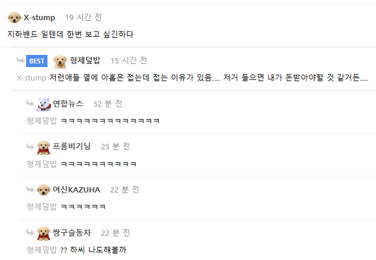

저 중 극소수만 살아남음 ㅠㅠ

저 중 극소수만 살아남음 ㅠㅠ

작년 연말에 치바에 페스보러 갔는데 역앞에서 혼자 버스킹하는 누나 생각나네... 노래 잘하던데
작년 연말이면 CDJ ?
그래도 딱 봤을 때 잘한다 싶은 애들은
바로바로 뜨던데
요즘은 SNS 바이럴 엄청 흥하니까
포텐셜 있으면 바로 로켓 쏨
아리까리하거나 애매하면 바로 묻혀도
모 행사장에서 사회자가 유튜브 십만명 채널이라고 소개한 사람이 나와서 발라드 부르는데 노래 진짜 못부르더라
저렇게 하면서 현재 살아남은 일본 메탈밴드들이 대단함
나이먹고 기력이 떨어져서 스튜디오밴드 된 아재들 많은데
그래도 젊었을때 코어팬들이 계속 같이 따라와줘서 저렇게 홍보안해도 꾸준히 수요가 있음
일본은 밴드문화가 꽤 활성화 되어 있어서 좋긴하더라
장르 폭도 넓기도 하고 재미있음
유툽에서 보던 얼굴이 한두명 있네.. ㅎ
저러다가 한 곡 팍 뜨면 내한 공연 오기도 함 ㅋㅋㅋㅋ
여행하다보면 되게 실력도 있고 노래도 좋은 밴드들이 역같은데 앞에서 버스킹하는경우 많더라
가만히 듣다보면 매니저?같은분들이 명함돌리고 있고 그러더라고